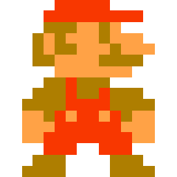

Index
In the early years of home-PC usage, graphics were very limited, due to the slow clocking speeds of the processors of that time. Slowly but surely games emerged from simple text-based storygames to good-looking and graphically intense pieces of art. Early games suffered from low hardware specs and couldn't even show transparency. One of the technologies that allowed the rapid increase of popularity that video games experienced were sprites.
A sprite is defined as a bitmap that is integrated in a larger scene. This allowed developers to save valuable RAM, by reusing already loaded Sprites and just slightly modifying them. Sprites could be combined using blitter operations. These operations used boolean operations to combine bitmaps and therefore saved a lot of valuable CPU time. The jump animation from Super Mario Bros. is a prime example.  Some consoles and computers had the concept of sprites actually hard coded into the ROM so developers could use them even more efficiently (as efficient as a human writing assembly can get). In this case sprites often had limitations to improve performance further. On a NES for example was the maximum amount of colors a sprite can contain limited to four. This led to interesting solutions for example the swapping of color pallets to show more colors. Sprites became slowly obsolete, due to rapidly improving hardware and a bigger focus on 3D games. But right between 2D and 3D games there was another era…
Right before the introduction of the PS1, Nintendo started to release games that looked 3D, but actually were 2D games. Vectors already started to replace sprites, but the old hardware of the SNES wasn't able to handle a lot of them, so they utilized a chip directly integrated in game cartridges of that time, to draw them. The resulting graphics had a 3D-looking effect, but were just cleverly coded 2D shapes. The SNES natively supported that optical illusion with a special screen drawing mode called Mode 7. Mode 7 was used to “roll” the screen and mimic a 3d landscape seen from 3rd person. A few examples of this technology in action are Super Mario Kart and Starfox.

Layers are multiple images, composed together to form a whole picture. This technology has been used since the rise of sprites and is very popular to this day. For example a common use case is a seperate layer for the background and another layer for the foreground. In Super Mario Bros. 3 layers were used. One for the sky background, one for the stage background and one for Mario and his jumping action. The layers are stored in a special section of the RAM called framebuffer.